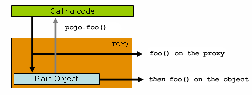

CM5 - Le Framework Spring Boot
1 Références
2 Inversion Of Control
2.1 Qu’est-ce que l’IoC ?
Nous avions vu dans les principes SOLID le “Dependency Inversion Principle” :
- High-level modules should not depend on low-level modules.
- both should depend on abstractions.
L’IoC (Inversion of Control), est un “design pattern”. C’est l’un des mécanismes qui permet d’implémenter le DIP (Dependency Inversion Principle).
D’autres patterns permettent d’implémenter le DIP : Factory, Strategy, Plugin architecture, Service Locator.
Dans Spring, l’IoC est réalisée principalement via l’injection de dépendances (DI).
Avantages :
- augmenter la modularité d’un programme
- division claire des responsabilités
Au lieu qu’un composant de haut niveau soit responsable de la création et de la gestion de ses dépendances, cette responsabilité est inversée et confiée à un conteneur spécialisé.
2.2 Système ne respectant pas le DIP
Dans cet exemple, les objets créent directement leurs dépendances :
public class StudentRepository {
private DatabaseConnection databaseConnection;
private CacheManager cacheManager;
public StudentRepository() {
this.databaseConnection = new DatabaseConnection();
this.cacheManager = new CacheManager();
}
public void saveStudent(String student) {
// ...
}
}2.2.1 Problèmes de l’approche
- certains objets doivent être partagés (singletons).
- on ne doit pas les recréer à chaque fois
- certains objets doivent utiliser une configuration différente en dev / qa / prod
- tests difficiles
- on ne peut pas facilement changer les dépendances
2.3 Système utilisant IoC
Dans un système utilisant IoC, un conteneur injecte les dépendances :
public class StudentRepository {
private final DatabaseConnection databaseConnection;
private final CacheManager cacheManager;
public StudentRepository(DatabaseConnection databaseConnection, CacheManager cacheManager) {
this.databaseConnection = databaseConnection;
this.cacheManager = cacheManager;
}
public void saveStudent(String student) {
// ...
}
}Le conteneur IoC est responsable de la création et de l’injection des dépendances nécessaires.
3 Introduction à Spring
Le framework Spring est l’une des implémentations les plus populaires de l’IoC en Java.
Il fournit un conteneur léger qui facilite la gestion des objets et leurs dépendances dans une application.
Grâce à Spring, les développeurs peuvent se concentrer sur la logique métier, tandis que le framework s’occupe des tâches répétitives.
3.1 Avantages de Spring
- Gestion simplifiée des dépendances : Spring gère automatiquement l’assemblage des composants de l’application.
- Modularité et testabilité : Les composants sont faiblement couplés, ce qui facilite les tests unitaires.
- Configurations centralisées : Les configurations sont centralisées et peuvent être définies à l’aide de fichiers XML, d’annotations ou de classes Java.
- Large écosystème : Spring offre une large gamme de projets pour différents besoins (Spring Boot, Spring Data, Spring Security, etc.).
3.2 Exemple d’utilisation de Spring IoC
Voici un exemple simple de configuration de Spring à l’aide de l’annotation @Component et de l’injection de dépendance via @Autowired :
@Component
public class StudentService {
private StudentRepository studentRepository;
@Autowired
public StudentService(StudentRepository studentRepository) {
this.studentRepository = studentRepository;
}
public void registerStudent(String student) {
// ... business logic
studentRepository.saveStudent(student);
// ...
}
}@Repository
public class StudentRepository {
public Optional<Student> findById(int id) {
// ...
}
// Autres méthodes d'accès aux données
}Spring gère la création de StudentService et de StudentRepository, ainsi que l’injection de StudentRepository dans StudentService.
@Repository est une spécialisation de l’annotation @Component. Elle permet d’indiquer que la classe gère l’accès aux données (DAO).
3.3 Classe principale
- l’
ApplicationContextcontient tous les objets (bean) créés
import org.springframework.context.ApplicationContext;
import org.springframework.context.annotation.AnnotationConfigApplicationContext;
public class MainApplication {
public static void main(String[] args) {
// AnnotationConfig => les injections se font par annotation
ApplicationContext context = new AnnotationConfigApplicationContext(SpringConfig.class);
StudentService studentService = context.getBean(StudentService.class);
studentService.registerStudent("John Doe");
}
}La création du contexte référence une configuration. La configuration peut se faire :
- par “scanning” des annotations
@Component, - ou par déclaration explicite
@Bean.
@Configuration
@ComponentScan(basePackages = "org.efrei.altn72.cm5")
public class AppConfig {
// Bean défini manuellement avec le nom "primaryDataSource"
@Bean
public DataSource primaryDataSource() {
var dsBuilder = DataSourceBuilder.create();
dsBuilder.driverClassName("org.h2.Driver");
dsBuilder.url("jdbc:h2:mem:test");
dsBuilder.username("SA");
dsBuilder.password("");
return dsBuilder.build();
}
// Autre bean manuel avec dépendance sur "primaryDataSource"
// Spring va d'abord chercher un bean du type "DataSource".
// S'il y en a plusieurs, il va ensuite chercher par le nom "primaryDataSource".
@Bean
public GradeService databaseService(DataSource primaryDataSource) {
return new GradeService(primaryDataSource);
}
}4 Spring AOP
4.1 Introduction
L’Aspect Oriented Programming permet de séparer le code qui s’applique de manière transversale de la logique métier. On parle de “Cross-Cutting concerns”. Par exemple :
- logging
- sécurité
- transactions
- gestion des erreurs
- caching
L’objectif est d’éviter de polluer le code métier avec ces préoccupations techniques, et de factoriser le code commun.
Il existe plusieurs technologies permettant de l’implémenter: AspectJ, Spring AOP, JBoss AOP. Spring AOP n’a pas pour objectif d’implémenter AOP de manière exhaustive. Son but est d’avoir une bonne intégration entre Spring IoC et Spring AOP pour résoudre des problèmes récurrents dans le développement d’applications d’entreprise.
4.2 Terminologie
- Aspect : le module contenant la préoccupation transversale
- Join Point : point d’exécution dans l’application (appel de méthode, construction d’objet…)
- Pointcut : expression qui sélectionne les join points où appliquer l’aspect
- Advice : l’action à exécuter (le code de l’aspect)
- Weaving : le processus d’application des aspects au code
4.3 Exemple
Exemple d’aspect qui va ajouter des logs pour toutes les méthodes d’un package :
@Aspect
@Component
public class LoggingAspect {
@Pointcut("execution(public * org.efrei.altn72.cm5.service.*.*(..))")
public void allServiceMethods() {
}
@Before("allServiceMethods()")
public void logBefore(JoinPoint joinPoint) {
System.out.println("Before method: " + joinPoint.getSignature().getName());
}
}- Aspect : Logging
- Join Points : l’exécution de toutes les méthodes publiques du package
service - Advice :
logBefore - Weaving : Spring AOP utilise l’un de ces deux mécanismes pour injecter le code :
- les “dynamic proxies” du JDK si les join point sont sur les interfaces
- les proxies CGLIB pour les classes

4.4 Utilisation
Il est rare de devoir implémenter ses propres Aspects. En général, nous allons utiliser des aspects d’une bibliothèque pour implémenter nos “cross-cutting concerns”.
Afin de pouvoir identifier facilement le code modifié par AOP, les bibliothèques utilisent en géneral une annotation spécifique, qui sera utilisée dans le Poincut.
Par exemple, l’annotation @Transactional permet de s’assurer pour que pour chaque méthode :
- une transaction sera présente (on peut forcer la recréation avec
REQUIRES_NEW) avant l’exécution - et qu’un commit ou un rollback (en cas d’exception) aura lieu à la fin
@Transactional(readOnly = true)
public class DefaultUserService implements UserService {
public User getUser(String userName) {
// ...
}
// these settings have precedence for this method
@Transactional(readOnly = false, propagation = Propagation.REQUIRES_NEW)
public void updateUser(User user) {
// ...
}
}5 Spring Boot
Spring Boot est une bibliothèque qui facilite l’utilisation de Spring et d’autres bibliothèques pour développer des applications d’entreprise. Elle propose une approche avec des choix bien définis. Elle privilégie l’approche “convention over configuration”.
5.1 Activité : Hello World
Nous allons créer une application Spring Boot “Hello World”. Elle possèdera un seul endpoint GET / qui renvoie une page “Hello World”.
- Dans IntelliJ, créez un nouveau projet :
- File -> New -> Project -> Spring Boot
- choisir Type: Maven
- Dependencies : cocher Web/Spring Web
- Créez ensuite une nouvelle classe
HelloApplicationet collez le code suivant :
import org.springframework.boot.SpringApplication;
import org.springframework.boot.autoconfigure.SpringBootApplication;
import org.springframework.web.bind.annotation.GetMapping;
import org.springframework.web.bind.annotation.RestController;
@RestController
@SpringBootApplication
public class HelloApplication {
@GetMapping("/")
String home() {
return "Hello World!";
}
public static void main(String[] args) {
SpringApplication.run(MyApplication.class, args);
}
}- Démarrez l’application
...
2025-11-24T20:28:45.802+01:00 INFO 26716 --- [spring_boot_demo] [ main] o.s.boot.tomcat.TomcatWebServer : Tomcat started on port 8080 (http) with context path '/'
2025-11-24T20:28:45.806+01:00 INFO 26716 --- [spring_boot_demo] [ main] o.e.a.spring_boot_demo.MyApplication : Started MyApplication in 1.652 seconds (process running for 2.535)- Testez l’endpoint avec http://localhost:8080
Nous observons les annotations suivantes :
@RestController(voir source) est une annotation composée avec :@Controller, qui est une spécialisation de@Component- Elle permet d’identifier les contrôlleurs dans le modèle MVC. Cela permet de “mapper” des URLs sur des méthodes de la classe.
- Nous avons vu que
@Componentétait l’annotation Spring de base pour déclarer des “beans”.
@ResponseBody: indique que les types de retour de méthodes seront transformés en JSON ou XML
@SpringBootApplication(voir source) est une annotation composite qui équivaut à déclarer ces 3 annotations :@SpringBootConfiguration: spécialisation de@Configuration. Dans Spring Boot, on ne doit avoir qu’une seule classe annotée@SpringBootConfiguration.@EnableAutoConfiguration: dit à Spring Boot de “deviner” comment vous voulez configurer Spring, en fonction des dépendances ajoutées. Comme nous avons ajoutéspring-boot-starter-webmvcdans notrepom.xml, Spring sait que nous voulons développer une application web utilisant Tomcat. Si HSQLDB est dans votre classpath et que vous n’avez pas configuré de connection, Spring Boot va auto-configurer une bdd “in-memory”.@ComponentScan: voir ci-dessus
@GetMappingsur les méthodes est un raccourci, qui équivaut à@RequestMapping(method = RequestMethod.GET). Cela signifie que Spring va “mapper” la requête HTTP GET sur la méthode.
5.2 Activité : application Customers
Nous allons maintenant créer une nouvelle application CustomersAplication. Elle possède deux endpoints REST permettant de créer (POST) et récupérer (GET) des clients.
import org.springframework.boot.SpringApplication;
import org.springframework.boot.autoconfigure.SpringBootApplication;
import org.springframework.http.HttpStatus;
import org.springframework.http.ResponseEntity;
import org.springframework.web.bind.annotation.*;
import org.springframework.web.server.ResponseStatusException;
import java.util.Map;
import java.util.concurrent.ConcurrentHashMap;
import java.util.concurrent.atomic.AtomicInteger;
record CustomerDto(int id, String name) {
}
record CreateCustomerDto(String name) {
}
@RestController
@SpringBootApplication
@RequestMapping("/customers")
public class CustomersApplication {
private final Map<Integer, CustomerDto> customers = new ConcurrentHashMap<>();
private final AtomicInteger idGenerator = new AtomicInteger(0);
@GetMapping("/{id}")
CustomerDto getCustomer(@PathVariable int id) {
var result = customers.get(id);
if (result == null)
throw new ResponseStatusException(HttpStatus.NOT_FOUND, "Customer not found with id: " + id);
else
return result;
}
@PostMapping()
ResponseEntity<CustomerDto> createCustomer(@RequestBody CreateCustomerDto customer) {
int newId = idGenerator.incrementAndGet();
CustomerDto newCustomer = new CustomerDto(newId, customer.name());
customers.put(newId, newCustomer);
return ResponseEntity
.status(HttpStatus.CREATED)
.body(newCustomer);
}
public static void main(String[] args) {
SpringApplication.run(CustomersApplication.class, args);
}
}Démarrez le programme, puis testez l’application avec le client HTTP d’IntelliJ. Observations :
- dans les annotations
@XXXMapping, le chemin peut comporter des variables{id}. Elles sont “mappées” sur les paramètres de méthodes avec@PathVariable. - le “body” de la requête HTTP est mappé en utilisant
@RequestBody - on peut contrôler les codes retours HTTP de deux façons :
- lancer une exception
ResponseStatusException - changer le type de retour en
ResponseEntity<?>
- lancer une exception
- comparez les annotations Spring avec les annotations Jakarta EE
Spring supporte certaines annotations Jakarta EE :
| Spring | Jakarta EE |
|---|---|
| @Autowired | @Inject |
| @Component @Qualifier | @Named |
| Bean validation annotations @NotNull, @Email, @Size, … | Bean validation annotations |
| JPA annotations @Entity @Id, … | JPA annotations |
Pour la validation et JPA, la pratique est d’utiliser les annotations Jakarta EE. Pour l’injection et REST, les projets utilisent en général les annotations Spring.
5.3 Externalisation de la configuration
Spring Boot offre la possibilité d’externaliser la configuration de l’application. Cela permet d’utiliser le même code en DEV, QA, PROD, mais avec des fichiers de configuration différents. Voir Externalized Configuration
5.3.1 Avec @Value
Par exemple, nous pouvons modifier notre application pour configurer le premier identifiant généré :
@RestController
@SpringBootApplication
@RequestMapping("/customers")
public class CustomersApplication {
@Value("${customers.data.initialId}")
private int initId;
private final AtomicInteger idGenerator = new AtomicInteger(initId);
// ...La valeur peut être passée à l’application de plusieurs façons :
- Dans un fichier application.properties
application.properties
customers.data.initialId=11- Dans un fichier
application.yaml - En ligne de commande :
java -jar customers.jar --customers.data.initialId=11
5.3.2 Avec @ConfigurationProperties
L’utilisation de @Value peut parfois être fragile, car le nom de la clé n’est pas validé à la compilation. L’annotation @ConfigurationProperties sur une classe permet d’injecter les propriétés en utilisant des attributs. C’est particulièrement pertinent lorsque la configuration est hiérarchique.
@ConfigurationProperties("customers.data")
public class CustomersProperties {
private int initialId;
public int getInitialId() {
return initialId;
}
public void setInitialId(int initialId) {
this.initialId = initialId;
}
}@RestController
@SpringBootApplication
@RequestMapping("/customers")
@EnableConfigurationProperties(CustomersProperties.class)
public class CustomersApplication {
private final CustomersProperties properties;
public CustomersApplication(CustomersProperties properties) {
this.properties = properties;
idGenerator = new AtomicInteger(properties.getInitialId());
}
//... 5.4 Spring Boot starters
Les dépendances “starter” sont des regroupements de bibliothèques qui permettent facilement d’utiliser une technologie. Par exemple si vous souhaitez utiliser JPA pour accéder à une base de données, il faut ajouter la dépendance spring-boot-starter-data-jpa dans le pom.xml.
Spring Boot offre une panoplie de dépendances starter : Spring Boot Starters, mais d’autres fournisseurs en proposent également.
Par exemple, pour une application REST en production, nous pourrons ajouter :
<dependency>
<groupId>org.springframework.boot</groupId>
<artifactId>spring-boot-starter-actuator</artifactId>
</dependency>
<dependency>
<groupId>org.springdoc</groupId>
<artifactId>springdoc-openapi-starter-webmvc-ui</artifactId>
<version>2.8.14</version>
</dependency>- Actuator permet de surveiller l’application. La dépendance permet de collecter des métriques pour vérifier qu’elle est en bonne santé.
- Des endpoints sont exposés pour inspecter les beans, les endpoints REST, l’espace disque, l’occupation mémoire, …
- Voir Actuator endpoints
- Pour des raisons de sécurité, la plupart sont désactivés par défaut. En production, vous devrez protéger les endpoints pour les rendre uniquement accessibles aux équipes opérationnelles.
- D’autres “starter” peuvent être utilisés pour offrir une interface d’administration utilisant les actuator, comme Spring Boot Admin.
- Springdoc permet d’exposer l’API avec Swagger, voir http://localhost:8080/swagger-ui
5.4.1 Décortiquons un starter
🪄 Spring Boot a ce côté un peu “magique”, où des choses se mettent à fonctionner ou pas en fonction des annotations et des dépendances. La documentation est à consulter en priorité, mais il est important de savoir naviguer dans le code source pour comprendre ce qu’il se passe.
Un starter est simplement un fichier pom.xml qui agrège plusieurs dépendances.
- Ctrl-Clic sur la dépendance
spring-boot-starter-webmvcdans votrepom.xml - Vous arrivez sur le
pom.xmldu starter. Il contient des dépendances sur tomcat, spring-boot-webmvc, …
Observons maintenant comment Tomcat est “autoconfiguré” avec le port 8080 :
- Depuis IntelliJ, aller dans la bibliothèque
spring-boot-tomcat-4.0.0.jar - Ouvrez
META-INF/spring/org.springframework.boot.autoconfigure.AutoConfiguration.imports. Ce fichier porte un nom spécial et est lu par Spring Boot. - Ce fichier contient une liste de classes annotées
@AutoConfiguration - Ouvrez
TomcatServletWebServerAutoConfiguration.- L’annotation
@ConditionalOnClassindique que cette auto-configuration n’est activée que si certaines classes sont présentes sur le classpath. - Elle déclare un bean de type
TomcatServletWebServerFactory - Ouvrons cette classe. On voit que le port est déclaré dans la super-classe
AbstractConfigurableWebServerFactoryavecprivate int port = 8080
- L’annotation
Si on souhaite changer le port, la lecture du code source nous montre plusieurs possibilités :
- Le bean
tomcatServletWebServerFactoryest@ConditionalOnMissingBean(value = ServletWebServerFactory.class, ...). Cela signifie que l’on pourrait déclarer ce bean dans notre application pour le configurer différemment. - On voit que
TomcatServletWebServerAutoConfigurationimporteServletWebServerConfiguration- Dans
ServletWebServerConfiguration, un beanServletWebServerFactoryCustomizerest créé - le
ServletWebServerFactoryCustomizera une méthodecustomize, qui récupère le port depuisthis.serverProperties::getPort ServerPropertiesa une annotation@ConfigurationProperties("server")- Cela signifie que ce bean est configuré avec un fichier
.properties. Pour changer le port, il faut donc modifierapplication.propertieset ajouterserver.port=8081.
- Dans
5.5 Tests
- Spring fournit une annotation
@SpringBootTest, qui permet de charger le contexte complet, en cherchant la classe annotée@SpringBootApplication. Mais pour la plupart des tests, c’est trop. Elle est à réserver pour les tests d’intégration qui ont besoin de tous les beans. - Pour le code métier, créer les services en utilisant le constructeur, et/ou utiliser un framework de mocking.
- Pour tester certaines couches de l’application, il existe des annotation spéciales :
@WebMvcTestpour les contrôlleurs REST@DataJpaTestpour la persistance JPA
Voir Testing Spring Boot Applications pour plus de détails.
5.6 Persistance
Le starter spring-boot-starter-data-jpa fournit :
- Hibernate
- Spring Data JPA : facilite l’implémentation des classes Repository
- Spring ORM : support pour les ORM dans Spring. Gère la création de l’
EntityManager.
5.6.1 Repository
Nous pouvons créer des requêtes auto-générées grâce au nom des méthodes (Query Methods). Lorsqu’une interface hérite de Repository<T, ID>, le nom des méthodes déclarées indique à Spring quelle requête il doit construire, grâce à une convention. 🧙♂️
public interface CityRepository extends Repository<City, Long> {
Page<City> findAll(Pageable pageable);
// Spring va automagiquement générer une requête
// "SELECT c FROM City WHERE UPPER(c.name) = UPPER(?1) AND UPPER(c.state = ?2)"
City findByNameAndStateAllIgnoringCase(String name, String state);
}Voir Query Creation pour la liste des mots-clés supportés.
Des interfaces par défaut pour les cas courants sont fournies, comme CrudRepository.
5.6.2 @Query
Nous avions vu dans le TP JPA les annotations @NamedQuery que nous pouvions ajouter sur les @Entity. L’approche atteint vite ses limites lorsque le nombre et la complexité des requêtes augmente.
Afin de mieux organiser notre code, il est préférable d’ajouter nos requêtes JPA dans une interface qui hérite de JpaRepository :
public interface UserRepository extends JpaRepository<User, Long> {
@Query("select u from User u where u.emailAddress = ?1")
User findByEmailAddress(String emailAddress);
@NativeQuery(value = "SELECT * FROM USERS WHERE EMAIL_ADDRESS = ?1")
User findByEmailAddressNative(String emailAddress);
// on peut nommer les paramètres en utilisant @Param
@Modifying
@Query("UPDATE User u SET u.status = :status WHERE u.id = :userId")
int updateUserStatus(@Param("userId") Long userId, @Param("status") String status);
}